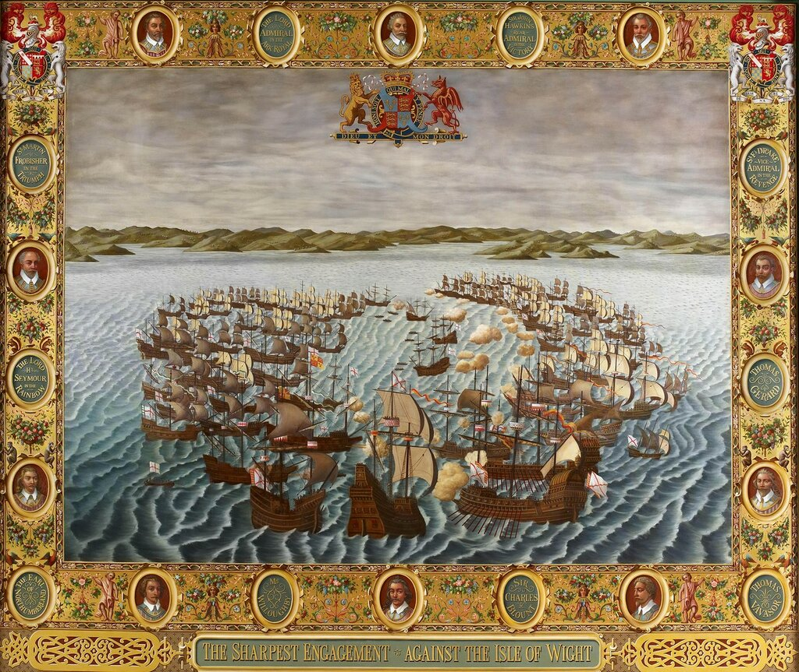
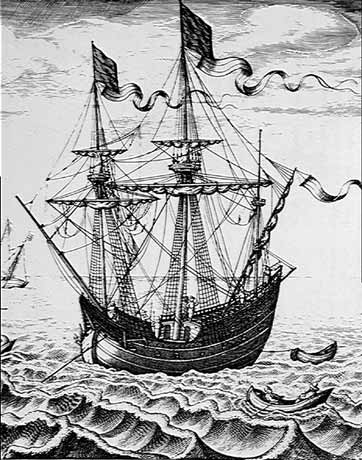
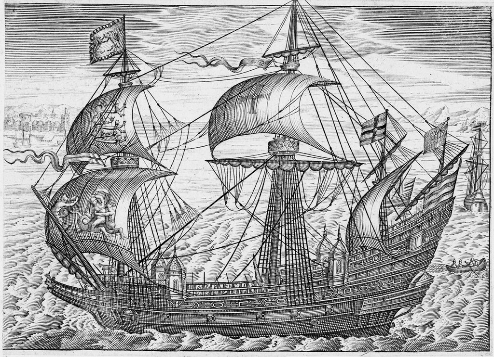
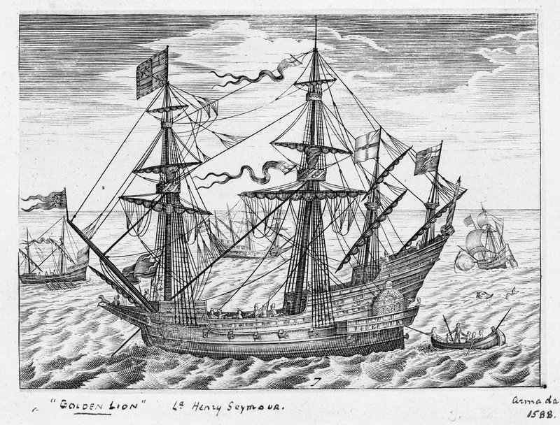
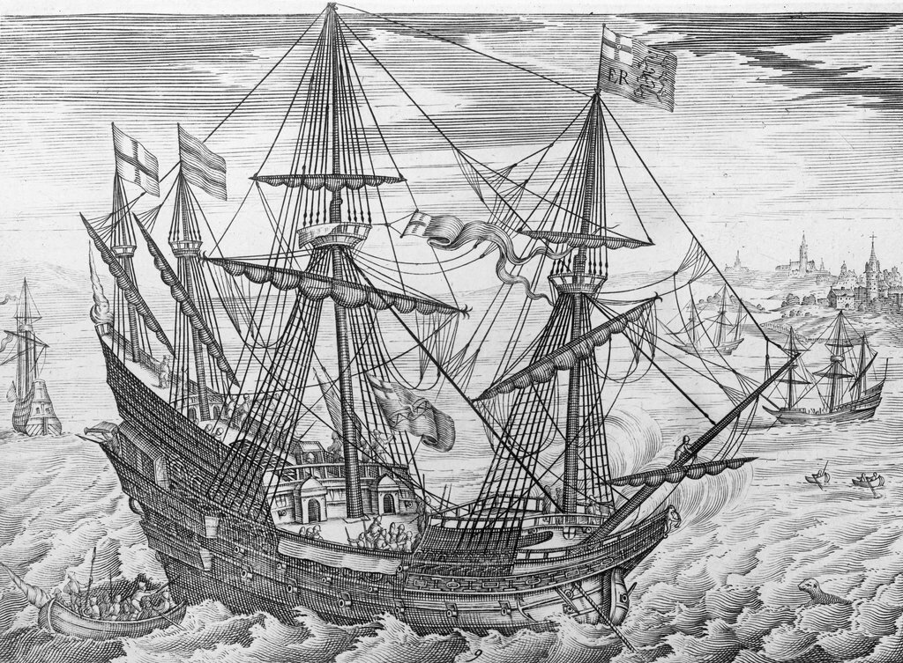
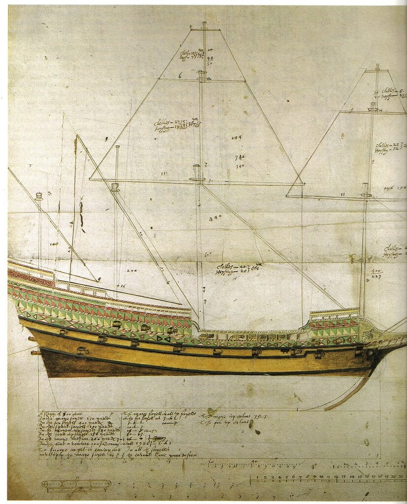

Позиции испанского и английского флотов утром 4 августа у острова Уайт. Копия гобелена, сгоревшего при пожаре Вестминстерского дворца в 1834 году.
О следующем дне экспедиции Непобедимой армады к берегам Англии обычно пишут немного и скромно. Нам же события этого дня 4 августа особенно интересны тем, что мощные галеоны оказались бы совсем беспомощными, если бы не маленькие гребные шлюпки, с помощью которых противные стороны получили возможность продолжить ведение боевых действий. Но обо всем по порядку. Вот продолжение текста из Дневника солдата.
В четверг 4 августа, в день Св. Доминика (día de Santo Domingo) вражеский флот начал интенсивный обстрел (gran carga de cañonazos) нашего арьергарда; тогда мы развернулись и открыли ответный огонь, который продолжался два часа, когда противник, наконец, отвернул и бежал. После этого враг совершил маневр для выхода нам на ветер и вернулся, чтобы напасть на нашего флагмана (n[uest]ra cap[ita]na real, т.е. галеон Сан Мартин _ g._g.). А так как корабль вице-флагмана (San Juan) находился в том месте, откуда он мог прийти на помощь, он атаковал противника. Тем временем мы узнали, что вражеский флагманский корабль потерял руль (reconocimos que a la cap[íta]na del enemigo le faltava el timón), и весь наш флот пустился в погоню за ним; все корабли противника собрались вокруг своего флагмана, чтобы подать ему буксирный конец и заслонить его от нашего огня. Мы выиграли ветер и некоторые из наших кораблей получили выгодную позицию по отношению ко многим кораблям противника (y algunas de las nuestras le llevaban ganado a muchas de las del enemigo), мы начали преследовать их. И пока мы изнуряли противника преследованием, стремясь довести дело до победы, наш флагман произвел выстрел из орудия, призывая корабли вернуться, чтобы мы могли продолжить движение. Как только мы вернулись и продолжили совместное плавание, противник вновь последовал за нами.
Все это продолжалось от рассвета до двух или трех часов после полудня. По мнению адмирала Хуана Мартинеса де Рекальде, мы не должны были прекращать свои действия, как это сделал флагман, а продолжать преследование, пока не загнали бы противника на мель (hasta hazerlos encallar) или вынудили бы его укрыться в порту. Ошибочным было также решение не заходить на якорную стоянку [Spithead], расположенную поблизости от острова Уайт, где можно было бы дожидаться ответа от герцога Пармы, так как это во всех отношениях лучшая якорная стоянка в Ла-Манше [см. предыдущий рассказ _g._g.].
Примечание 13. С полуночи 4 августа на море царил полный штиль. На рассвете Армада, как и в предыдущие дни, не досчиталась в своих рядах двух кораблей: из строя выпали королевский галеон San Luis de Portugal и вест-индский вооруженный купеческий корабль (каракка или нао) из Андалусской эскадры Duquesa Santa Ana, которые оказались на значительном расстоянии от назначенных им позиций в походном ордере Армады.

Купеческий корабль, мобилизованный для Непобедимой Армады. Гравюра Питера Брюгеля.
Отсутствие ветра не позволило кораблям англичан быстро подойти к потенциальным жертвам. Ближе всех к испанцам оказались корабли эскадры Джона Хокинса. Они спустили корабельные шлюпки, которые повели на буксире боевые корабли эскадры к одиноко стоявшим испанским кораблям. Первым шел флагманский корабль Хокинса Victory. Движение это продолжалось до тех пор, пока вокруг гребцов на шлюпках не засвистели пули, выпущенные из испанских мушкетов.
Царившая на море безветренная погода диктовала необходимость применения гребных судов. Но испанские галеры, как мы знаем, отстали еще на первом этапе движения Армады. Оставались только галеасы. Герцог Медина-Сидония распорядился, чтобы три галеаса оказали помощь двум испанским кораблям, одиноко маячившим в отдалении от общего строя Непобедимой армады. Для увеличения огневой мощи спасательного отряда галеасы взяли на буксир флагманский корабль левантийской эскадры La Rata Santa Maria Encoronada. Казалось, Хокинсу ничего не оставалось делать, как поворотить свои корабли назад, но в этот момент ему на помощь пришел флагман английского флота Ark Royal под командованием лорда-адмирала Говарда, который двигался на буксире у своих шлюпок вокруг левого фланга отряда галеасов.

Флагман английского флота Ark Royal под командованием лорда-адмирала Чарльза Говарда. Гравюра Visscher, Claes Janszoon. National Maritime Museum, Гринвич
Вслед за своим флагманом спешил Golden Lion.

40-пушечный корабль Golden Lion (1557). Гравюра Claes Jansz Visscher. National Maritime Museum, Гринвич.
Экипажи кораблей английского и испанского флотов, стоявших с обвисшими парусами, внимательно наблюдали за развитием событий, не в силах изменить что-либо в этом представлении.
Лорд-адмирал Чарльз Говард впоследствии написал об этом событии так: «Арк Ройял и Голден Лайен произвели несколько удачных залпов по галеасам на виду у обоих флотов». В результате галеасы получили тяжелые повреждения и вынуждены были отказаться от продолжения своей затеи. Говард самодовольно добавил к своим записям, что после этого случая галеасы уже не принимали участия в боевых действиях.
В воспоминаниях испанских моряков по этому поводу говорится лишь, что два галеаса взяли на буксир San Luis и Santa Ana на виду у шести английских кораблей, которые пытались воспрепятствовать действиям испанцев. В результате галеасы потеряли: один - кормовой фонарь, другой – носовую фигуру, а третий – получил легкие повреждения корпуса, что вряд ли существенно сказалось на их боеспособности, так как уже полчаса спустя галеасы продолжили свой путь по напрвлению к Кале. Так что, по-видимому, записки английского лорда-адмирала из категории тех рассказов , про которые принято говорить «врет как на войне».
После данного инцидента погода изменилась, подул легкий бриз. Ночной дрейф испанских кораблей привел их к южной оконечности острова Уайт, от которой они находились на удалении не более одной лиги. Англичане первыми воспользовались благоприятным ветром. Три их эскадры атаковали испанский арьергард. Практически одновременно Медина-Сидония повел авангард Армады против четвертой английской эскадры под командованием Фробишера. Но ветер был еще недостаточно силен, и испанский флагман Сан Мартин оказался один против полудюжины английских кораблей, включая Triumph Фробишера. С усилением ветра к месту столкновения подошел десяток испанских тяжелых галеонов, которые поддержали своего капитан-генерала. Англичане вынуждены были ретироваться, обойдя левый фланг испанцев. Лишь флагманский Triumph не успел прорваться и был отрезан от своих сил испанскими кораблями. Фробишеру не оставалось ничего другого, как попытаться выйти против ветра на буксире у своих шлюпок, что он и осуществил. Сил у гребцов не хватало, но в этот момент подоспели плавсредства с других английских кораблей, и когда число баркасов достигло одиннадцати, стало очевидно, что Фробишер отрывается от преследовавших его испанцев. К тому же подоспели два крупных английских галеона Bear и Elizabeth Jonas, обошедшие испанцев с фланга.

White Bear под командованием Томаса Говарда. Гравюра Claes Jansz Visscher. Из коллекции National Maritime Museum, Гринвич.

Чертеж английского галеона, вероятно Elizabeth Jonas, из трактата корабельного мастера Мэтью Бейкера (1530–1613)
Медина-Сидония не терял надежды одержать первую крупную победу над противником, однако удача и в этот раз была не на его стороне. Ветер переменился, Triumph поставил все свои паруса, подобрал спущенные шлюпки и отошел в сторону, поджидая другие корабли своей эскадры.
О продолжении боевых действий 4 августа у острова Уайт расскажем в следующий раз.